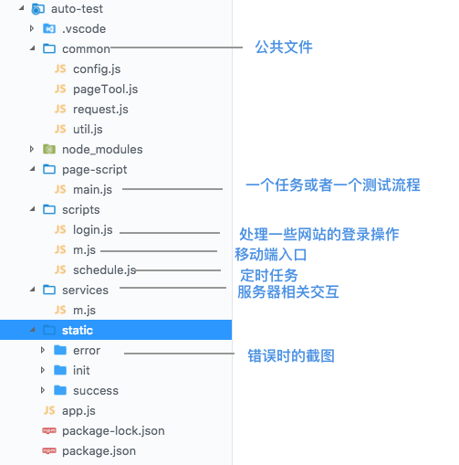
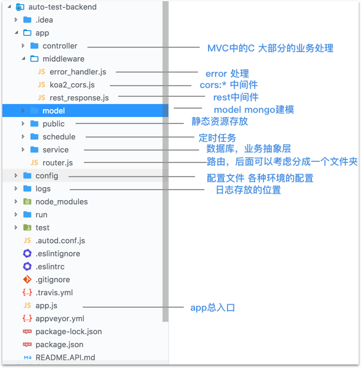
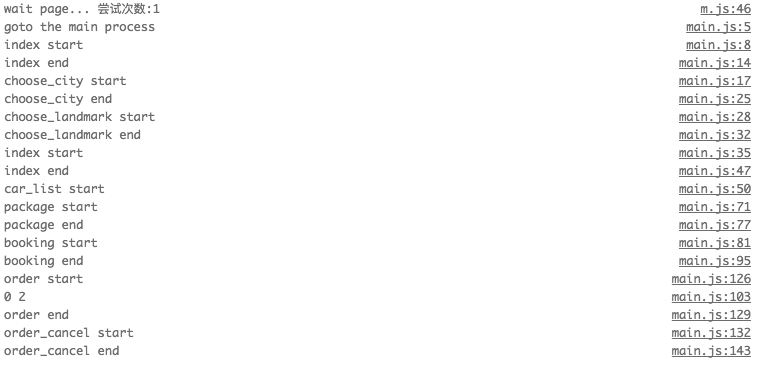
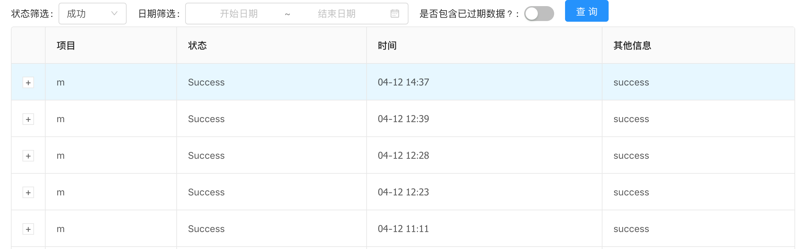
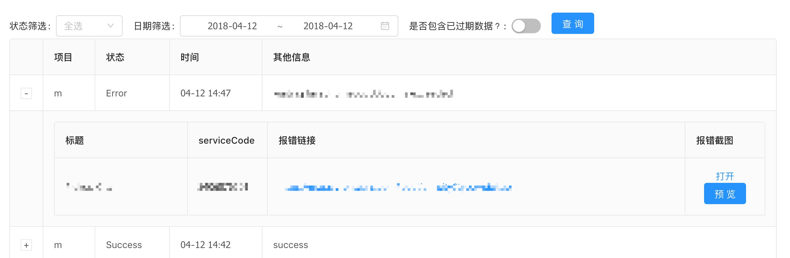

Introduction
得益于谷歌开源了 puppeteer 无界面版的 Chrome nodeJs api。
现在前端可很方便快捷的开发一些脚本去跑浏览器端的操作，包括自动化测试，爬虫或其他比较机械化的操作。
可以参见我上一篇文
自动化测试 puppeteer 与qq空间
ps: 🤦 早知道当时删微博就直接写一个脚本，人工去删还漏了一些被批斗了一顿
既然 puppeteer 可以拿来做这么多事情，那前端是不是可以整合出一套流程测试的方案？
大概的流程是：
- 定时跑业务流程
- 成功则发送一条消息通知服务器
- 失败则 截图发送截图与其他信息
- 到达一定的阈值就通知相关人员排查问题
- 提供一个前端页面可以查询 任务情况
1 | +-------------------+ |
用到的技术栈
自动化测试: puppeteer + axios + node-schedule
后台: egg + mongoose
前端界面: antd + dva
其实主要就 puppeteer + egg + mongoose 即可，前端界面只是刚好公司一个后台是用 antd-pro 写的 所以顺手带上去而已 = =#
本地一些环境：node 8.9.4, npm 5.6.0, oxs 10.13.3， 编辑器 vscodeeeeee
以下涉及到公司项目业务的 都会略过讲一下过程 不会出现具体代码或截图等…
自动化测试(auto_test)部分
目录结构:

入口: app.js 主要处理一些获取自动化测试浏览器的对象， 项目启动， 定时任务启动
1 | const mMonitor = require('./scripts/m'); // m端测试脚本入口 |
前置处理: login.js (这里可以取其他名字)
对于我这个项目来说 在开始跑之前要处理测试账号登录等问题，因为考虑到后面会有多个任务在跑的话，直接在 browser 对象 create new tab 可以同步跑，而不用每次都去处理登录问题。
1 | const puppeteer = require('puppeteer'); |
mMonitor 移动端测试任务
主要处理的事情有：
- 调用其他的流程测试任务，比如我是： 公司项目的主流程下单任务
- 处理一些需要记录的信息，比如从什么时候跑，什么时候结束
- 处理与服务器的交互，成功调接口
- 失败截图保存用户信息等 传递给服务端
1 | module.exports = async function mMonitor(browser) { |
schedule 定时任务
这里的定时任务用的是 node-schedule 非常好用 支持 Cron-style。
schedule.scheduleJob(cronStyle)
cronStyle 参数 传入对应的时间，既可按照传入的参数 定时去执行，具体可以看👆链接
1 | cronStyle: |
目前 auto_test 用到的定时任务只有一个1
2
3
4
5
6
7
8
9
10
11
12
13
14
15
16
17
18
19
20
21
22
23const schedule= require('node-schedule');
const path = require('path');
const fs = require('fs');
//删除某个目录的一层文件
function delPathFile(path) {
if (!fs.existsSync(path)) return;
const files = fs.readdirSync(path);
files.forEach(file => fs.unlinkSync(`${path}/${file}`));
}
// 定时删除图片，每周一一次
exports.scheduleDelPic = function() {
const initPath = path.join(process.cwd(), '/static/init');
const errorPath = path.join(process.cwd(), '/static/error');
const successPath = path.join(process.cwd(), '/static/success');
schedule.scheduleJob('* * * * * 1', function () {
delPathFile(initPath);
delPathFile(errorPath);
delPathFile(successPath);
});
}
总的来说 auto_test 做的事情大概就是
- 启动
app.js， 项目就会 10分钟自动跑一次测试程序。 - 成功、失败后做出对应的操作。
- 每周清除一次本地的截图数据。
但是几个弊端
- puppeteer 是模拟浏览器，所以你的所有行为都是模拟用户操作：选择dom，点击、填写、选择操作。这些都是很容易因为页面的dom变化而失效，比如本来是选了一个
#userId的文本框，后面迭代把#userId改为#uuid那你就选不到了。 所以业务测试代码(__mainProcess__模块) 做好模块拆分，后面跟项目迭代也方便调整。 - 因为网络或dom操作经常触发异步行为，所以业务测试代码里面充满各种
waitForwaitForSelectorwaitForNative等…不注意可能就会操作到没有出现的元素，这块要做好控制，比如waitFor 时间久一点，或者在page上封装一个方法，比如page._click:1
2
3
4async _click(selector) {
await page.waitForSelector(selector, { visible: true });
return page.click(selector);
},
在每次点击之前，先等待该元素出现再点击。这样可以避免很多运行时 没有找到元素的错误
- 模仿用户行为测试的话，意味着你要做一些前置的处理 如
login.js， 要把账号密码等写到代码里面…虽然可以加密 不过还是会存在部分泄露风险…
自动化测试服务端(auto_test_backend)部分
对比 auto_test 部分， auto_test_backend才是我最头疼的地方。
毕竟不是科班出身的前端，对后端思想 以及数据库操作也没碰过= =emmm 做起来真的是超级无敌的费劲
特别是 设计数据格式的时候，都是拍脑袋决定了。 咦 我加个字段， 咦 我改个字段 又不是很清楚怎么快捷操作…. 估计是不熟 mongoose 的原因….
这个项目用的是 egg 框架，所以基本项目结构都是按着egg的规范来。
目录结构:

egg 帮我们做了很多事情，开发的时候只要跑一下 npm run dev，就会启动一个默认端口为7001的服务
对我们现在来说，基本只是提供 RESTAPI。
剩下的就简单啦，在app/router.js写对应的路由 如:router.post('/api/v1/monitor', app.controller.monitor.create); 这样如果有post请求:7001/api/v1/monitor 就会交由 monitor.create 这个 controller 处理。
路由配置 app/router.js
目前路由配置比较简单，就配置了两个，一个用来处理接收 auto_test项目中测试结果；一个用来输出测试列表。
1 | module.exports = app => { |
controller 解析用户的输入，处理后返回相应的结果
egg帮我们做了封装，直接在controller文件夹下起文件，写对应的数据，后面可以从全局对象app.controller.fileName.mothedName去获取对应的方法，比如现在有这个文件 app/controller/test，那么我可以在其他地方通过 app.controller.test去获取。
这里拿 app.controller.monitor.get 举例
monitor.get 方法要做的事情有
- 验证结构的请求参数规则
- 处理查询参数
- 处理分页的问题
- 调service 获取数据
- 处理数据
- 调用rest中间件发送数据
验证参数，这里用到的是 egg-validate插件，直接配置就可以用了
1 | exports.validate = { |
1 | const Controller = require('egg').Controller; |
service 处理一些和数据库交互的逻辑
service和controller 一样，egg帮我们做了一些文件的映射，所以也是直接在app/service/monitor.js写对应的逻辑即可
这一块应该是最麻烦的， mongoose api 不熟，也不确定这么写会不会最优,合不合理等…有时间或者以后有机会 会去看《SQL必知必会》 学学数据库这一块软肋。
1 | const Service = require('egg').Service; |
添加配置1
2
3
4
5
6
7
8
9
10
11
12
13module.exports = appInfo=> {
const config = {
// 中间件配置
middleware: ['errorHandler'],
// errorHandler配置，只对 /api 开头的路由做处理
errorHandler: {
match: '/api',
}
}
return config;
}
阈值发送邮件功能
这一块要维护两个临时变量数组，三个配置参数1
2
3
4
5
6
7
8
9
10
11
12
13
14
15
16
17const temp = {};
temp.errorObj = {
errorArray: [], // 用来存每次错误上报的时间戳
sendArray: [], // 用来存每次发送的时间戳
}
const errorConfig = {
maxCount: 5, // 单位时间超过n次就报警
unitTime: 30, // 单位时间为：n分钟
maxSend: 2, // 单位时间最多发n封邮件
}
大概的逻辑是， 每次报错的时候， errorArray 塞入一个时间戳，然后判断：
1. 判断是否到达发送阈值
2. 根据当前的时间戳和配置来清理过期的数据
3. 判断单位时间内是否达到发送阈值
4. 判断单位时间内是否超过发送次数
5. 构建发送内容， 🚀 处理后续的记录操作
用到的发邮件插件是 nodemailer 简单粗暴 用过都说好
and
其实 auto_test_project 最麻烦的是在定义数据库格式的时候，经常定义少一些关键的字段（目前肯定也还存在这种情况的）。
还有就是本来以为和 angular 一样，controller 会塞大量的业务逻辑， 等到后面有一个场景是要在某个 controller调用另一个controller 时才发现，原来 controller 主要的职责是负责处理路由和一些参数验证输出等比较对外的工作，对内的基本都写成了service。
前端的小伙伴很多人懂node 可能也只是懂node的语法层 要想真的写后台或者微全栈，还是有很多东西要学的。
列表展示(admin)项目
列表展示相对简单，没什么好讲的。想用什么技术栈都比较随意，react,vue甚至hbs或者直接在js里面写html字符串循环都ok。
这里推一下一篇文章，介绍工作中的一个项目 react全家桶 && dva最佳实践
end
跑自动化测试脚本(auto_test)的log

自动化测试成功后提交数据(admin)

自动化测试失败后将数据上报(admin) 包含了标题，报错信息，链接，截图，标记等

文章作为学习的记录到此结束，这个项目主要学习了 egg,mongodb,puppeteer 等 还是挺有收获的.